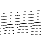
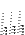

NOTA BENE: until v.4.0, atomic positions for a non scf calculations were read from input, while the scf potential was read from the data file of the scf calculation. Since v.4.1, both atomic positions and the scf potential are read from the data file so that consistency is guaranteed.
The following input variables are relevant for noncollinear and spin-orbit calculations:
noncolinTo make a spin-orbit calculation noncolin must be true. If starting_magnetization is set to zero (or not given) the code makes a spin-orbit calculation without spin magnetization (it assumes that time reversal symmetry holds and it does not calculate the magnetization). The states are still two-component spinors but the total magnetization is zero.
lspinorb
starting_magnetization (one for each type of atoms)
If starting_magnetization is different from zero, it makes a non collinear spin polarized calculation with spin-orbit interaction. The final spin magnetization might be zero or different from zero depending on the system.
Furthermore to make a spin-orbit calculation you must use fully relativistic pseudopotentials at least for the atoms in which you think that spin-orbit interaction is large. If all the pseudopotentials are scalar relativistic the calculation becomes equivalent to a noncolinear calculation without spin orbit. (Andrea Dal Corso, 2007-07-27) See Example 13 for non-collinear magnetism, Example 22 for spin-orbit interactions.
Calculations in the Hartree-Fock approximation, or using hybrid XC functionals that include some Hartree-Fock exchange, currently require that -DEXX is added to the preprocessing options DFLAGS in file make.sys before compilation (if you change this after the first compilation, make clean, recompile). Documentation on usage can be found in subdirectory examples/EXX_example/.
The algorithm is quite standard: see for instance Chawla and Voth,
JCP bf 108, 4697 (1998); Sorouri, Foulkes and Hine, JCP 124,
064105 (2006); Spencer and Alavi, PRB 77, 193110 (2008).
Basically, one generates auxiliary densities
= *
5.1.0.7 Polarization via Berry Phase
See Example 10, file example10/README, and the documentation
in the header of PW/bp_c_phase.f90.
5.1.0.8 Finite electric fields
There are two different implementations of macroscopic electric fields
in .x: via an external sawtooth potential (input variable
tefield=.true.) and via the modern theory of polarizability
(lelfield=.true.).
The former is useful for surfaces, especially in conjunction
with dipolar corrections (dipfield=.true.):
see examples/dipole_example for an example of application.
Electric fields via modern theory of polarization are documented in
example 31. The exact meaning of the related variables, for both
cases, is explained in the general input documentation.


Next: 5.2 Optimization and dynamics
Up: 5 Using PWscf
Previous: 5 Using PWscf
Contents
Paolo Giannozzi
2010-05-07